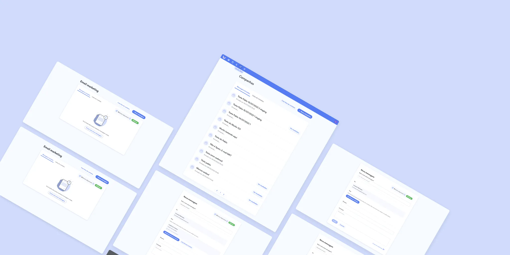
Umbler
Email Marketing
A redesign of Umbler's Email Marketing tool, focused on simplifying campaign creation and improving usability through UX research.
Tags:
UI Designer
Tags:
UI
Desktop
Overview
Creating email campaigns involves managing content, recipients, and configuration before sending.
I explored how UX improvements could make these tasks clearer and easier to complete, reducing friction throughout campaign creation.
The challenge
Campaign creation shouldn't feel complicated
The existing experience presented usability challenges that made campaign creation less intuitive.
The challenge: How might we simplify email marketing workflows while helping users create campaigns with confidence?
Understanding the experience
Research before redesign
I used UX research to understand how users interacted with the Email Marketing tool and identify friction across key workflows.
The findings helped prioritize improvements based on usability rather than visual preference alone.
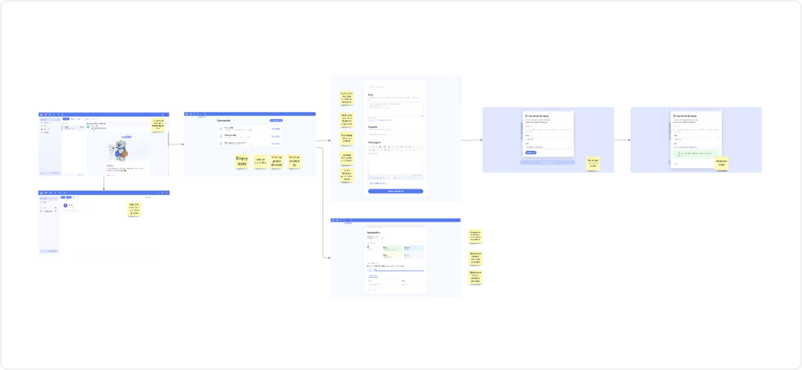
Design decisions
| Theme | Problem | Decision | Why |
|---|---|---|---|
| Simplify campaign creation | Campaign setup involved unnecessary complexity. | Refine the workflow and organize related actions. | Make campaign creation more straightforward. |
| Improve information hierarchy | Important information and actions lacked clarity. | Restructure content and visual hierarchy. | Help users understand what matters and what to do next. |
| Make interactions more intuitive | Some interactions created unnecessary friction. | Refine controls, feedback, and action placement. | Make the interface easier to navigate and use. |
The User flow
Once the priorities were defined, I redesigned the end-to-end user flow to reduce friction during campaign creation and ensure every decision solved a specific usability issue identified during research.
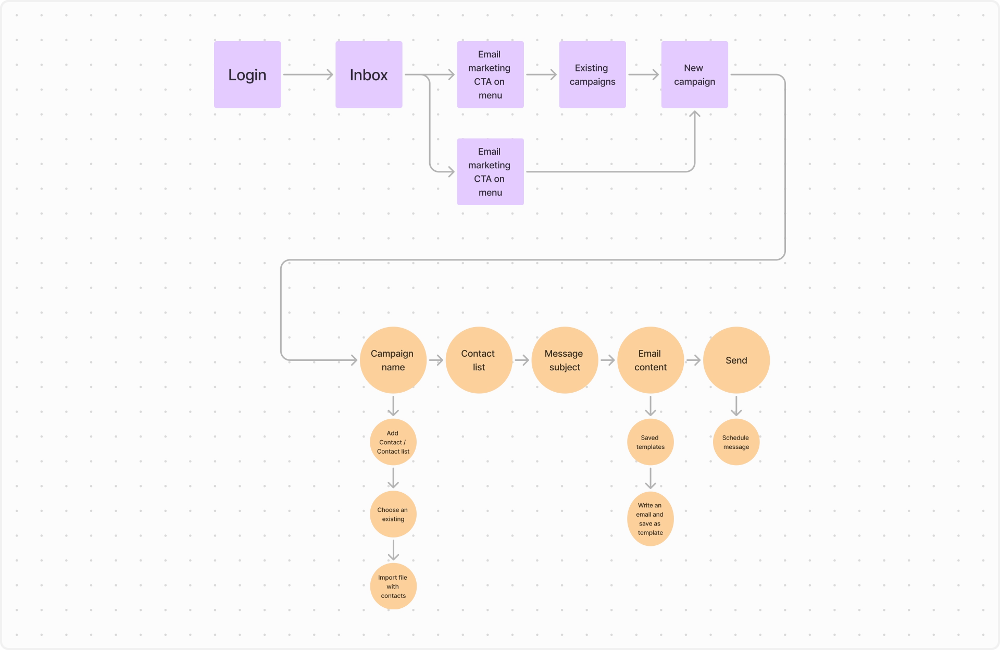
Competitors audit
To validate our assumptions, I analyzed how leading email marketing platforms handled campaign creation and contact management. While their solutions confirmed several patterns, they also revealed opportunities where Umbler could provide a simpler experience.
Key Findings:
➕
Most competitors required too many steps before sending a campaign.
👥
Managing contact lists was often unnecessarily complex.
👁️
Campaign costs and available credits were rarely visible during creation.
Wireframing
The wireframes focused on reducing cognitive load while preserving familiarity for existing users. Rather than redesigning the interface from scratch, I simplified interactions and optimized the experience for smaller screens.
Scroll to view all
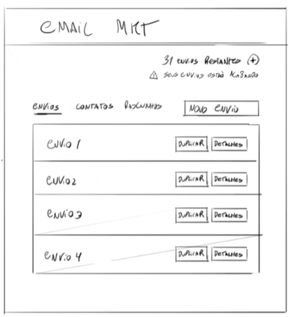
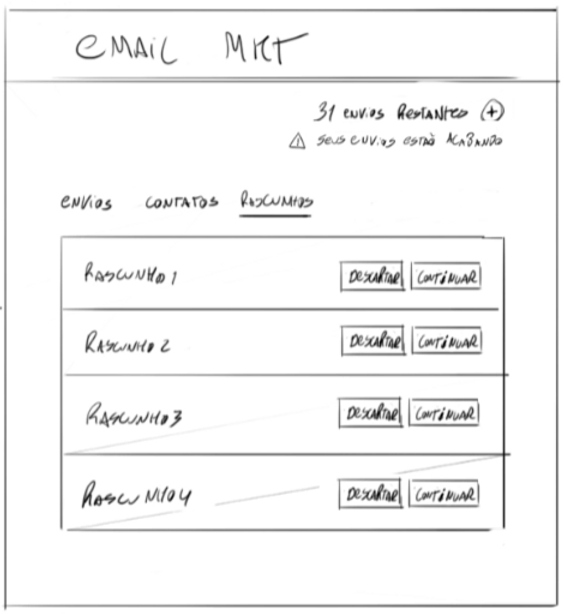
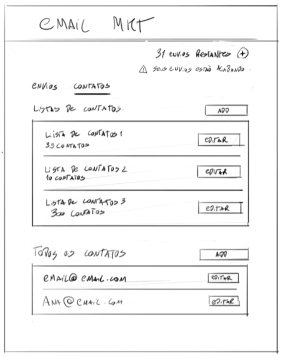
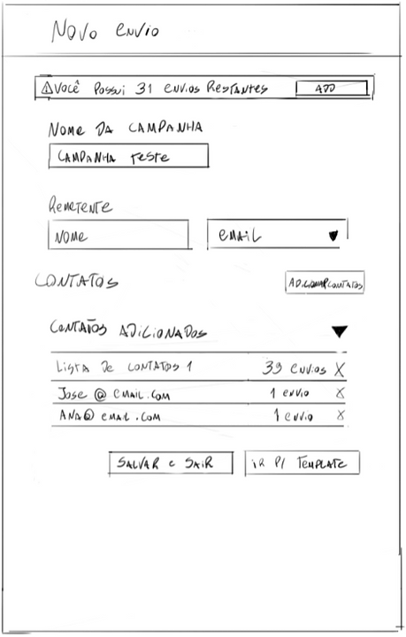
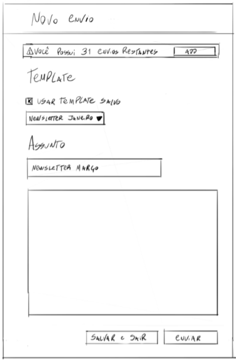
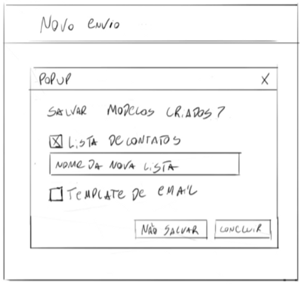
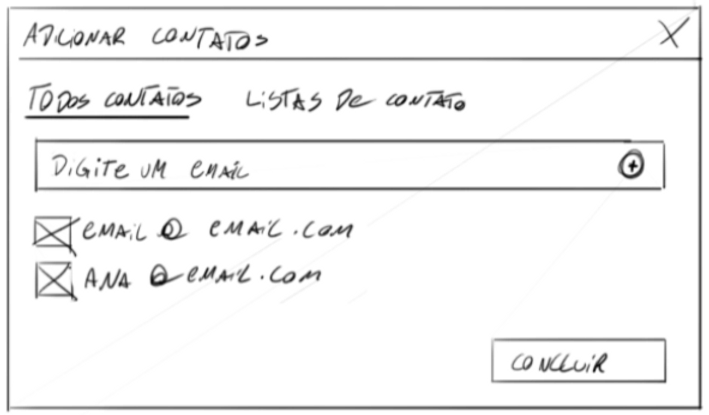
The redesigned experience
A clearer path from setup to campaign
The redesign focused on making campaign creation more organized and predictable.
Clearer structure
Related information grouped together.
Simpler interactions
Key actions easier to identify.
Better hierarchy
Important content more visible.
Improved usability
Workflows refined around user needs.
Scroll to view all
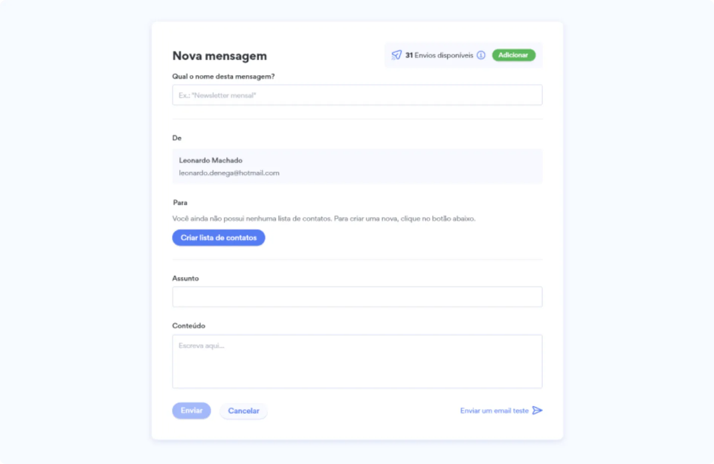
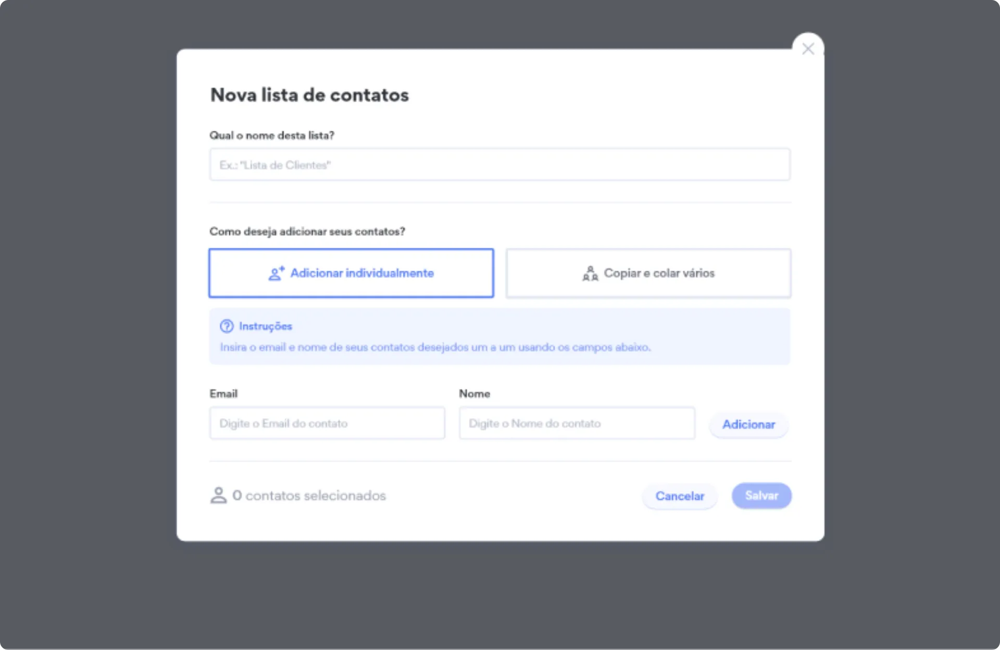
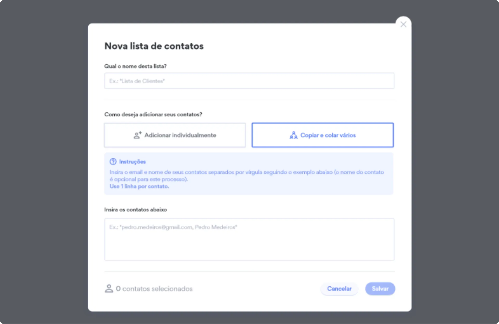
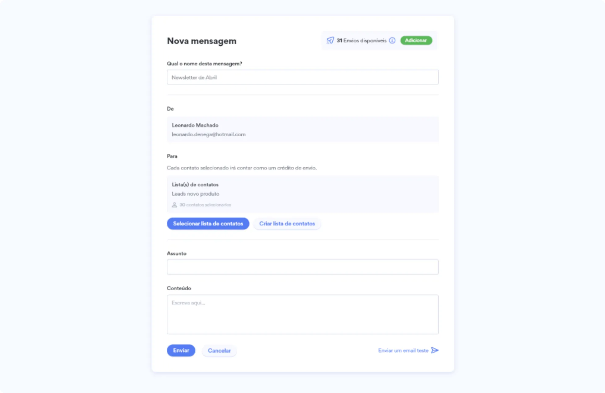
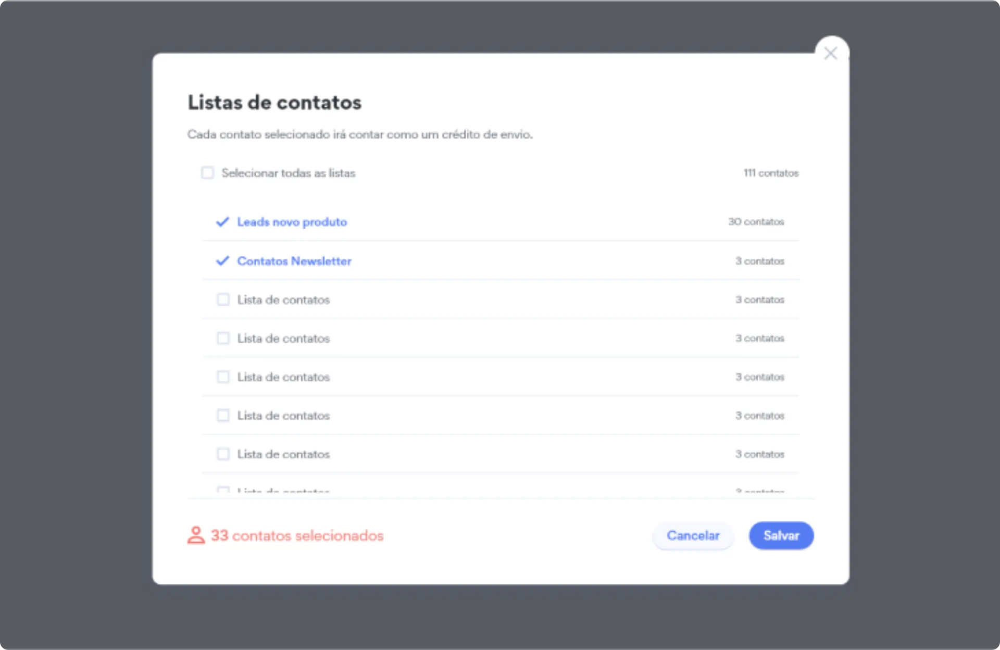
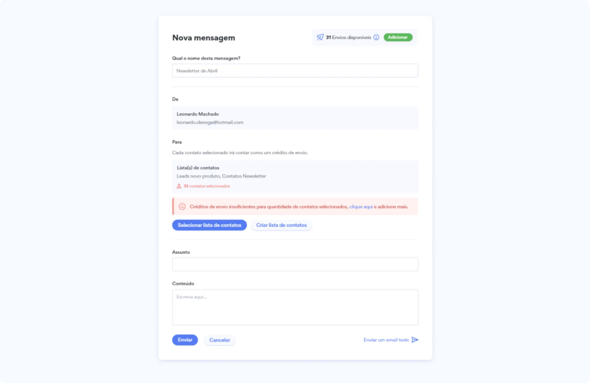
Contact lists
Users can create reusable contact lists, import contacts from spreadsheets, or build new lists from existing contacts. Every step can be completed entirely with the keyboard, improving accessibility and efficiency.
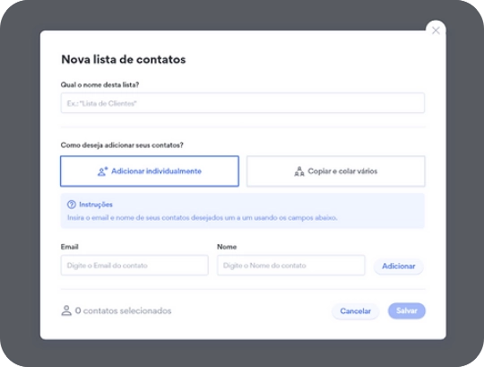
Easier campaign management
I redesigned the campaign and contact list pages to improve scanability and reduce visual clutter, making it easier for users to locate existing campaigns and understand their status at a glance.
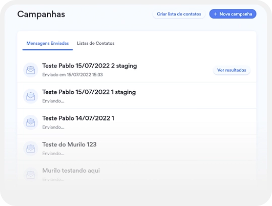
Outcome
Less friction. More intuitive campaign creation.
UX research informed a redesign focused on usability, clearer interactions, and better workflow organization.
The result was a more structured experience that made email campaign tasks easier to understand and navigate.
2
UX research process
1
Campaign workflow
1
Usability-focused redesign
What I learned
Research helped uncover usability issues that weren't immediately visible through the interface alone.
The project reinforced how small interaction improvements and clearer hierarchy can make repetitive workflows feel significantly more intuitive.